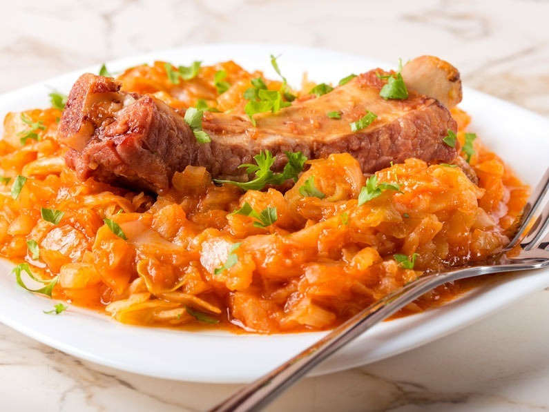

Cooked Cabbage

Sweet and spicy Cooked Cabbage
A very short and simple as well as tasty romanian Cooked Cabbage
Ingredients
- Cooking Oil
- Cabbage
- Meat (optional)
- Cayene Pepper/Chilli
- Salt
- Pepper
- Tomato Sauce
- 2 Onions
- 1 Pepper
- Chop the Onions and Pepper
- Pour cooking oil in a wok type pan
- Cook the onions and pepper until soft
- Add the Tomato Sauce
- Chop the Cabbage
- Let the stove on low heat
- Add the cabbage
- Stir for 2 minutes
- Repeat steps 6 & 7 untill all cabbage is used
- Turn the head up to medium heat
- Leave the wok with a lid
- Every 10 minutes lift the lid and stir the cabbage
- In around ~25 minutes it should be done
- Add Salt, Pepper, and Chilli on your taste
- ENJOY